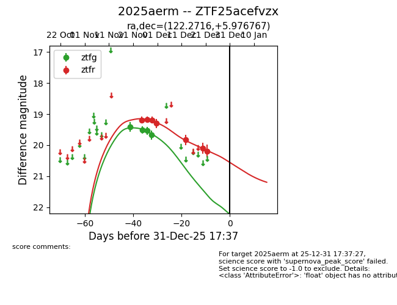
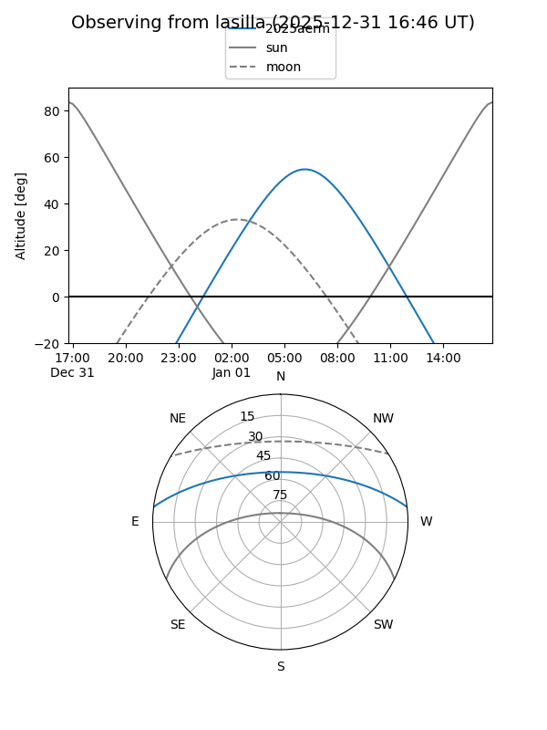
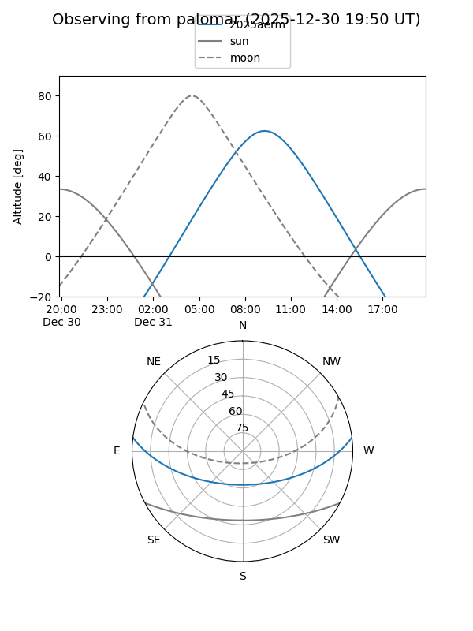
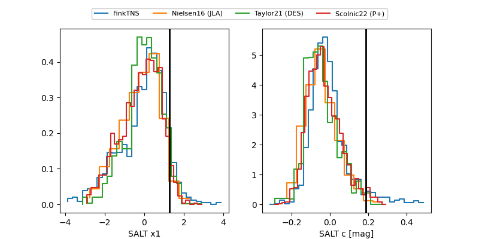

2025aerm
Target 2025aerm at 2025-12-20 11:10
Aliases and brokers:
FINK: fink-portal.org/ZTF25acefvzx
Lasair: lasair-ztf.lsst.ac.uk/objects/ZTF25acefvzx
ALeRCE: alerce.online/object/ZTF25acefvzx
TNS: wis-tns.org/object/2025aerm
YSE: ziggy.ucolick.org/yse/transient_detail/2025aerm
alt names
ZTF25acefvzx (ztf,fink_ztf)
2025aerm (tns,yse)
Coordinates:
equatorial (ra, dec) = 122.2716,+5.97677
equatorial (HMS+DMS) = 08:09:05.17,+05:58:36.36
galactic (l, b) = (216.4736,+19.97853)
Flags:
Photometry:
last ztfg=19.67, ztfr=20.10
4 ztfg, 6 ztfr detections
Lightcurve

Visibility


Additional plots
